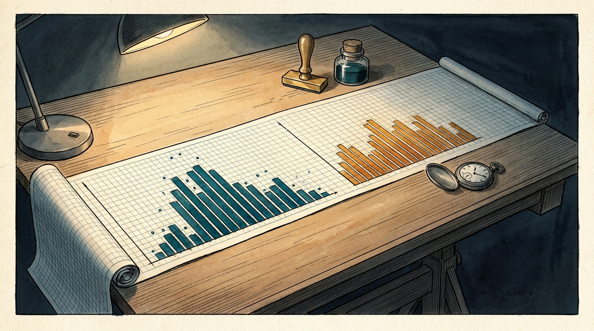
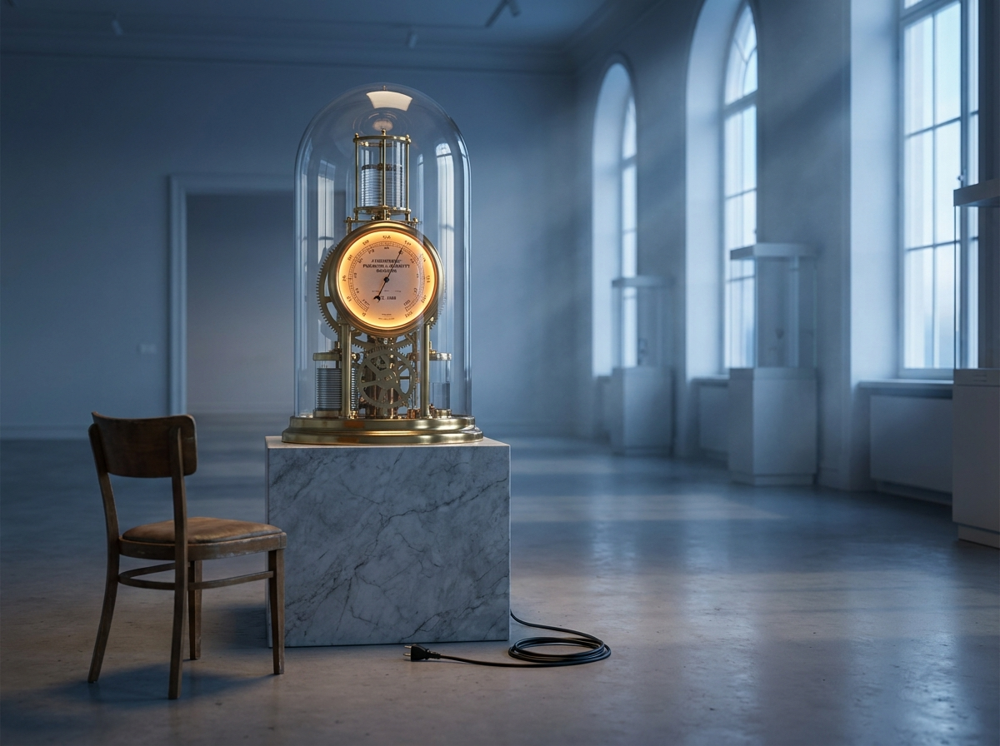

Two months ago a mirror built from this repository said one thing: the work gets finished and never leaves the branch. Every number in that sentence has since moved — except the one the sentence was about.
What follows was compiled by a script, not by recollection. reflections/track.sh
reads the fork's git history and emits the hard numbers; the prose is the only part written
by hand. Where a number and a memory disagree here, the number wins — which is the rule this
record was built on in the first place.
On 2026-07-21, six days after reading the mirror, he spent five minutes and three commits:
merged the stranded vault branch — the first merge in the fork's history — wrote session rules
into CLAUDE.md, and added /ship, /triage,
/tryit.
Read the order carefully. He did not resolve to try harder. He changed the machine so the step could not be skipped, then let the machine carry it: "the agent owns ALL git mechanics," "last ten minutes: ship or archive, there is no third option." Seven months of stalling ended in under a week, which tells you the stall was never willpower. It was an unspecified step in a system that was otherwise fully specified.
The unit of work inverted too. In February a whole project landed as one 1,355-line commit and sat unmerged for 195 days. In September the Driver Load Path arrived as a plan, then M0 through M8 — nine pull requests, each 700 to 1,700 lines, each merged before the next opened. He did not learn to ship by lowering his standard for finished. He learned to cut work into pieces that each deserve a merge.
The strongest new pattern in the record is a sleep. Building clusters in the evening; merging clusters the next morning. Those five- to ten-hour latencies are not hesitation — they are a night. It is a review gate he never wrote down, and it is better than most teams' review process.

Thirteen pieces of work have been merged to main. The two that predate the session rules waited seventeen and thirty-one days. The eleven that came after waited a median of five hours, and two of them under three minutes.
Seventeen pull requests, all opened by him, all merged by him, and not one review comment from another human anywhere in the record. The gate the July mirror named — "for me only, until they provide value to others" — did not open. It moved. A cheaper, testable gate (merge to main) got installed and now fires eleven times a week, and merging to a repository only you read is not exposure. It is filing.
No one outside this account has opened anything built here. 17 PRs, 0 comments, 0 collaborators.
267 tests exist. .github/ does not. They run only when someone remembers.
Three finished apps, all reachable only at localhost. Every other step in the loop has a make target; this one has nothing.
217 days, nothing toward the fork's stated V1 goal — now formalized by an open draft PR declaring apps/ a sandbox.

"I am not comfortable in using git." — interview, 2026-07-16
Six commits in September are authored under his own git identity, and fifteen merges are his. The explanation for seven months of non-shipping has outlived its truth.
Behavior over self-report — the premise this whole record was commissioned on.
The record itself went unread for eight weeks. The scorecard due 2026-08-16 was never filled in, during the most productive stretch on file. A record kept by hand does not survive a sprint; that is why the counting is now a script.
CLAUDE.md, still, today: "Current Goal: V1 by Christmas."
Zero lines toward V1-ROADMAP.md in 217 days, and an open draft PR that says apps/ has nothing to do with browser automation. One of those two sentences should be deleted. A stale goal quietly taxes every future decision about what belongs here.
file://.| Layer | Choice | The refusal that defines it |
|---|---|---|
| Runtime | Vanilla JS, canvas + SVG | No dependencies, no build step, opens from file:// |
| Tests | node --test | No framework, no runner, no config — 267 cases |
| Serving | python3 -m http.server | 31 make targets; the Makefile is the entire UI |
| Illustration | Nano Banana / Gemini | The one place outside tooling is allowed in — 16 images |
| Harness | Claude Code, session trailers, /ship /triage /tryit | The harness records itself |
| Self-tracking | make track | No network, no key — nothing leaves the machine |
Calibrated guesses from a fifteen-day record, not measurements — which is why each carries an indicator you can check in days. When one resolves, write down which, and when. An unscored forecast is a horoscope.
M9 through M12, a fourth instrument in apps/, 40,000 words of debrief. Everything
gets better and nothing gets seen. Highest probability because it is the current trajectory and
nothing about it feels like a problem.
Indicator: the next session opens a milestone instead of a deploy.
Four of four previous bursts were followed by a silence of 16 to 88 days. Today is day five of the heaviest run in the record, and the commit counts through it went 3, 7, 3, 9, 2.
Indicator: no commit by 2026-09-27 confirms it. Any commit before then falsifies it.
One person opens the Driver Load Path in a browser. This is the only branch that changes what the record means, and the only one that has been top of two consecutive roadmaps without ever being attempted. Base rate governs the number.
Indicator: a deploy config appears in the tree — or a person gets named out loud.
Contact-force splits, exact exponential integration, a second-order body, an assumptions drawer that shows its own provenance. For driving instructors, ergonomics students or sim-racing forums this is a teaching tool. It demands the thing avoided and the thing enjoyed at once, so it can wear the first scenario's clothes for months.
Indicator: a README that addresses a stranger rather than its author.
The most distributable thing in this repository is not an app. It is 200 lines of POSIX shell that answers "what does my record actually say about how I work?" against any git repo, with no install, no network and no key — and it is the only artifact here that needs no deploy step to be useful to someone else.
Indicator: it gets run against a repository that is not this one.
Cycle one proved he will do anything he has specified. The specification for exposure is still missing; everything below is either that specification or protection for the rhythm that made cycle one work.
The app is static and zero-dependency — there is no technical step left, only a recipient. Naming the person after the deploy turns this into scenario one.
A dated zero is a finding. A blank is a dodge.
make test on push.267 tests, zero automation, during the fastest week on record.
Merge the sandbox PR and rewrite the goal line to whichever is true — workshop, or browser-automation fork.
Eight dead branches, plus one abandoned 165 days ago that still needs a single click.
Twenty minutes: make track, reread the mirror, fill the scorecard. A rhythm survives a small session; it does not survive a skipped one.
/ship now requires a link, or an explicit "nobody, and I accept that." An acknowledged audience of one is a decision; an unacknowledged one is the thing this record exists to catch.
The July version of this system was a set of documents someone had to remember to update, and it went eight weeks without being touched. The counting is now one command that reads git and nothing else:
make track # regenerate reflections/metrics.md TRACK_OFFLINE=1 sh reflections/track.sh # no network at all TRACK_TZ=Europe/Berlin make track # recount the clock elsewhere
| File | Kind | Answers |
|---|---|---|
metrics.md | generated | What happened, in numbers. Never hand-edited. |
evidence.md | append-only | Dated facts with receipts, and hypotheses for the next pass. |
mirror.md | append-only | The portrait. Old readings stay on the page so they can be wrong in public. |
roadmap.md | working | Next actions and the scorecard, including the rows git cannot see. |
futures.md | working | State of the art, scenarios, and the sheet they get scored on. |
One rule holds the whole thing together: the script measures what git can see, and git cannot see whether another human ever opened any of this. Those fields are left blank on purpose, and a blank is a finding.